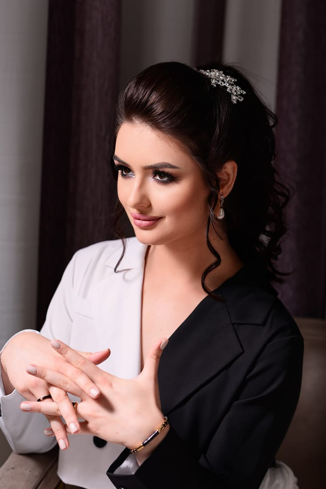
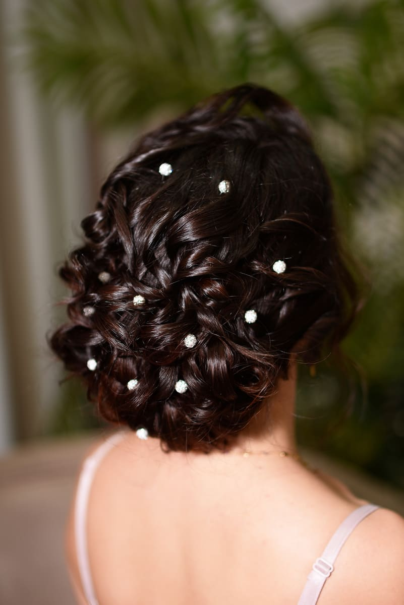
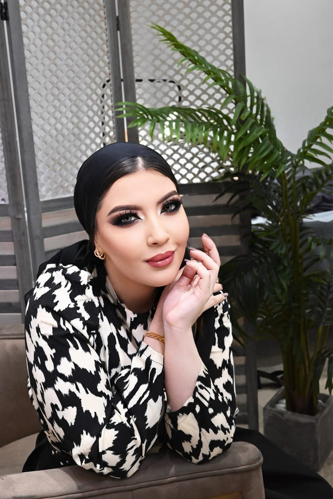
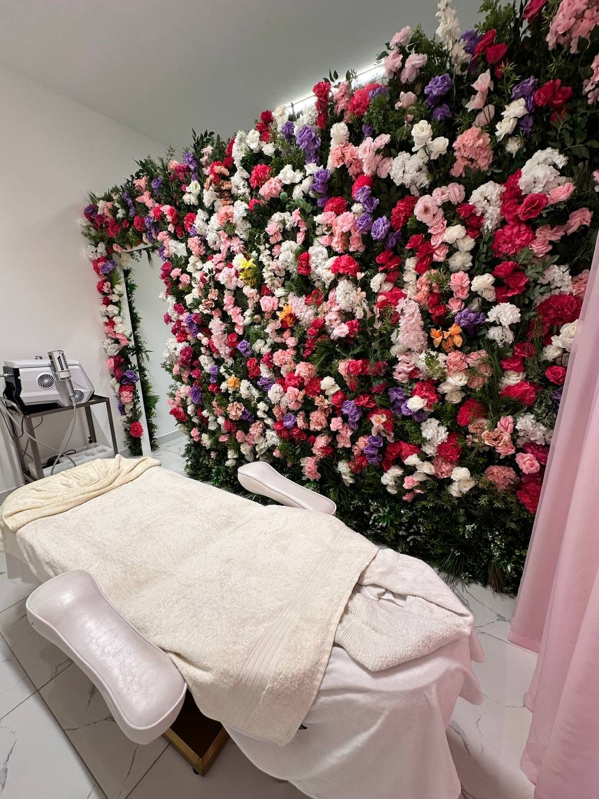
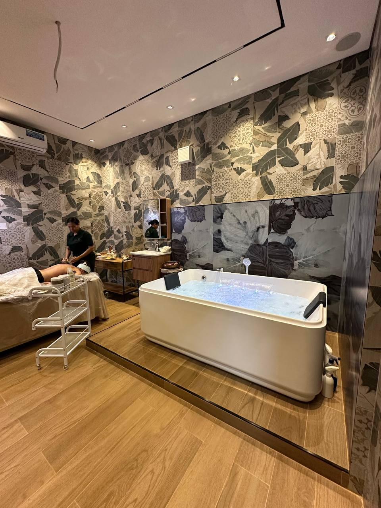
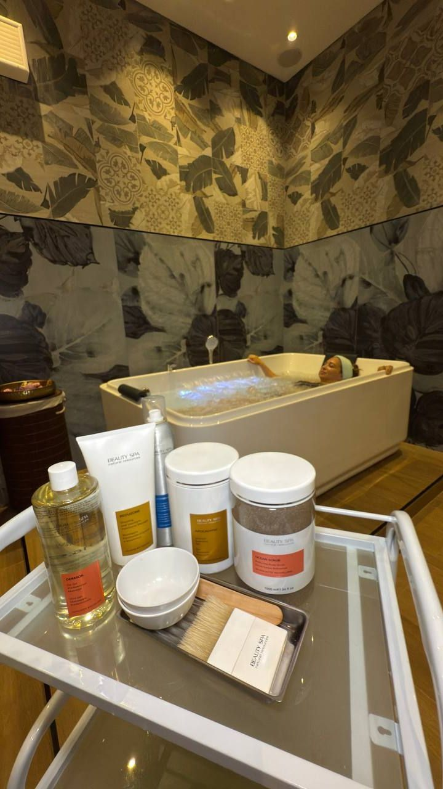
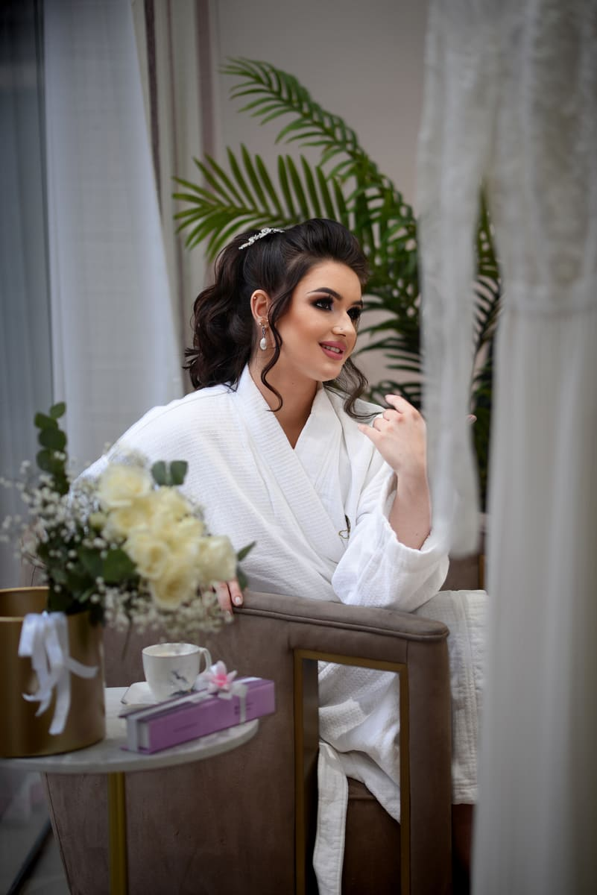

ECOSOPHY · FOR HER
ABOUT US
One house in Ajman for nails, skin, body and hair — and the people who do the work.
SCROLL ↓






WHY ECOSOPHY
WHAT YOU WILL FIND HERE
- A premium ladies’ beauty and wellness house in Ajman
- One of the widest selections of aesthetic facial treatments in the emirate
- Dermapen 4 by DermapenWorld™ microneedling
- Russian-speaking nail and lash masters
- A Top Brow Master
- Semi-permanent makeup
- Experienced massage therapists from Bali and Kerala
- EMSCULPT body sculpting
- Endospheres treatments
- Maderotherapy and lymphatic drainage
- Infrared sauna and Moroccan bath
- Customized slimming and body-contouring packages
- Professional hair services
- Personalized skincare and wellness programs
- An international team of beauty professionals
- An elegant and relaxing environment

THE ECOSOPHY EXPERIENCE
“Ecosophy is more than a beauty salon. It is a destination where beauty, aesthetics, body care and wellness come together.”
A Russian manicure, a Dermapen treatment, semi-permanent makeup, body contouring, a massage or a full SPA ritual — whatever brings you in, the visit is built around you.
VISIT US
FIND US IN AJMAN
ADDRESS
Al Rawda 2, Ajman, UAE
HOURS
Daily · 10:00 AM – 10:00 PM
CALL & WHATSAPP
{{ whatsapp }}
INSTAGRAM
@ecosophy.ae